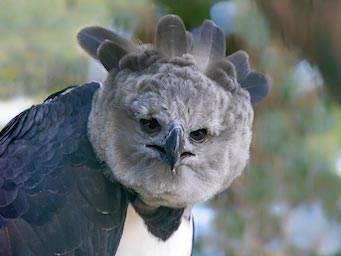
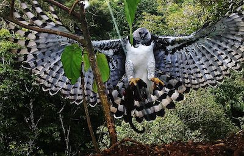

Wow! Based on your answers... You share similarities with the Harpy Eagle (Harpia harpyja)

The Harpy Eagle's athleticism not only comes from its speed, its top speed being 50 miles per hour, but its immese strength and flying capabilities. The Harpy Eagle has the ability to fly almost straight up which allows it to attack prey from below as well as from above, this gives them a large tactical advantage. In regards to their strength, they exert enough pressure to crush bone. These birds also hunt completely alone, doing all of the work themselves. Harpy Eagles are not always agressive; they will even allow a human to approach it so long as they keep their distance. Even though the Harpy Eagle will allow humans to look at it, it maintains its serious personality. Like the Harpy Eagle, you stand at an average height, are athletic and have a more strict and serious personality, letting your grip on control loose every once in awhile.
Click on Ceasar to Restart!